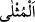
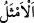
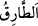
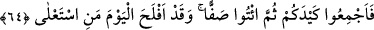
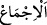
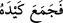

Gizlice ve fısıldaşarak “Şöyle dediler: “Bu ikisi,” Mûsâ ve Hârun “muhakkak ki,”
daha önce gösterdikleri “sihirleriyle” size galebe çalarak ve istîlâ yoluyla “sizi
yurdunuzdan” Mısır’dan “çıkarmak ve sizin örnek yolunuzu ortadan kaldırmak
isteyen iki sihirbazdırlar sadece.”
kelimesinin müennesi olup “en şerefli”
mânâsına gelir. Yâni onlar kendi din ve mezheplerini üstün ve hâkim kılarak sizin en
üstün ve şerefli dîninizi ortadan kaldırmak istiyorlar. Onlar bu sözleriyle sihirbazların
yolunu değil, Fir’avn’un kavminin üzerinde bulunduğu dîni kasdediyorlardı. Çünkü,
Fir’avn “Ben, onların sizin dininizi değiştirmelerinden korkuyorum” (el-Mü’min,
40/26) demişti. Sihirbazlar, bir dine inanmazlardı.
Bahru’l-ulûm’da der ki: “Onlar tuttukları yoldan son derece memnun ve mutlu
oldukları için yollarını böyle isimlendirmişlerdir. Nefislerinin huzur bulduğu din oydu.
Nitekim âyette “Her fırka kendinde olan ile böbürlenir.” (er-Rûm, 30/32)
buyrulmuştur.
İmam Râğıb der ki: “
”, ayaklarla çiğnenen ve basılan yoldur. Allah Teâlâ:
“Onlara denizden kuru bir yol aç” (Tâha, 20/77) buyurur. Buradan istiare yoluyla
insanın tuttuğu iyi veya kötü işlere de ‘tarik (yol)’ adı verilmiştir. Âyette de bu kelime
en faziletli yol mânâsına kullanılmıştır.
64. Öyle ise hilenizi kurun; sonra sıra halinde gelin! Muhakkak ki bugün, üstün
gelen kazanmıştır.
“Öyle ise hilenizi kurun;” onu sağlam yapın ve onun hakkında azimli olun.
“
‘ ” kelimesinin hakîkati görüşünü onun üzerinde topladı, demektir.
‘Müslümanlar şu konuda icmâ etti’ demek, o konuda fikirleri birleşti demektir. Râğıb
der ki: “Çoğu zaman uzun bir düşünme ve tefekkürden sonra ulaşılan hakkında görüş
birliği olan şeye denir.”
Âyet şu mânâya gelir: Mûsâ ve Hârun’un sizi memleketinizden çıkarmak isteyen birer
sihirbaz olduğu mâlumunuz olduğuna göre ona karşı koymak için hile ve tuzaklarınızı
birleştirin, hepiniz birlik olun, kimse bu mücâdeleden geri kalmasın ve hepiniz aynı
hedefe yönelin.
Bir kırâate göre “fecmiû”, “fecmeû” diye okunmuştur. Nitekim yukarıdaki “
(hilesini topladı)” âyeti de bu okuyuşu destekler. Bu kırâate göre mânâ şöyle olur: Siz
sihir âletlerinizi toplayın, gerektiği gibi onları sıralayın.
“Sonra” güçlü ve heybetli görünmek için “sıra hâlinde gelin!” saflar hâlinde
buluşma yerine gelin.
Rivayete göre onlar yetmiş saf ve her safta bin kişi olarak geldiler. Saf, nesnelerin ve